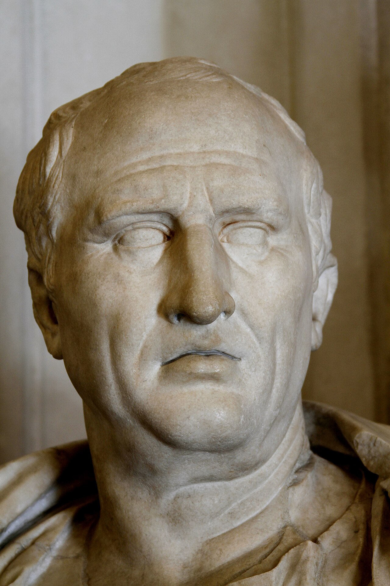

CityLoop Quest Copenhague


Copenhague commence par un rivage bas, quelques îlots et un passage commode entre la Zélande et Amager. Des traces d’occupation remontent à la préhistoire, mais le noyau urbain se forme surtout autour d’un petit port de pêche et de commerce appelé Havn, simplement « le port ». Au XIIe siècle, l’évêque Absalon, proche du roi Valdemar Ier, fait édifier une forteresse sur l’actuelle île de Slotsholmen. Cette construction protège les marchands contre les pirates et affirme l’autorité royale sur un carrefour maritime de plus en plus précieux.
Le nom København dérive de Købmandens Havn, le port des marchands. Hareng, céréales, bois et produits de la Baltique circulent par les quais, tandis que les pêcheurs d’Amager approvisionnent la ville. Copenhague obtient des privilèges urbains au XIIIe siècle, mais reste longtemps disputée entre évêques, rois et Ligue hanséatique. En 1368, une flotte hanséatique attaque et détruit la forteresse : preuve que le port est déjà assez important pour susciter les convoitises.
Au XVe siècle, la monarchie s’installe durablement à Copenhague. L’université est fondée en 1479 et la ville devient capitale de fait du royaume. Les remparts enferment un tissu dense de rues, d’églises, de marchés et de maisons à colombages. Les incendies, les épidémies et les reconstructions effacent beaucoup de bâtiments médiévaux, mais le tracé irrégulier autour de Strøget, Gammel Strand et Gråbrødretorv conserve la mémoire de cette ville serrée derrière ses portes.
Christian IV, qui règne de 1588 à 1648, agrandit spectaculairement la capitale. Il crée Christianshavn sur un plan régulier inspiré des villes néerlandaises, construit Rosenborg, la Bourse, l’arsenal et la Tour Ronde, puis développe un quartier au nord autour de Nyboder. Ses ambitions coûtent cher au royaume, mais elles donnent encore aujourd’hui à Copenhague une partie de sa silhouette.
La ville moderne s’étend réellement après l’abandon militaire des remparts au milieu du XIXe siècle. Les lacs deviennent une nouvelle limite urbaine, Vesterbro, Nørrebro et Østerbro se densifient, tandis que le port accueille industrie et chemins de fer. Au XXe siècle, logements sociaux, métro, ponts cyclables et reconversion des quais transforment l’ancienne place forte en métropole ouverte. Chercher les lignes des anciens remparts sur un plan permet de comprendre pourquoi certaines rues tournent brusquement et pourquoi tant de parcs entourent encore le centre.